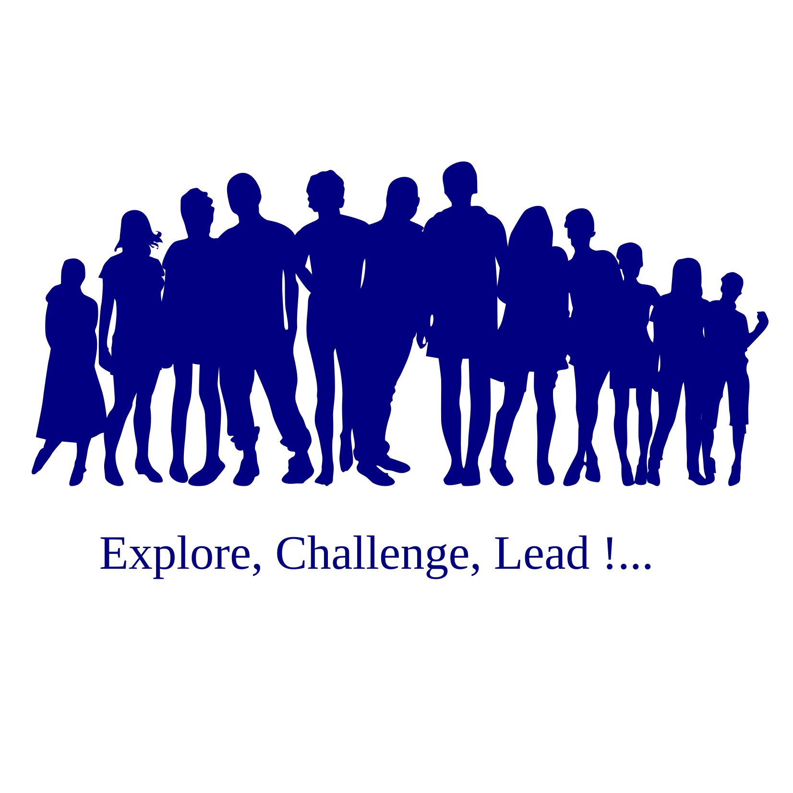

We QB Networks and Masscollabs Services are leading to Software, Hardware and Science for the Internet Cyberspace with our own consciousness. We have our own roadmap and which is why we say we are a Free Software project. This is an open way to software and open infrastructures …
QB Networks is a Free Software company which is holding and maintaining Masscollabs Services and its subprojects …
Human Dignity is Fundamental
All our activities center on human dignity. Technology, data, software,
or decision-making mechanisms must never supersede humanity.
“A human is God’s vicegerent on earth; anything that harms them
betrays the divine trust.” — Prophet Muhammad (PBUH)1
Ethical Leadership Stems from
Responsibility
Decision-making power comes not from authority but from integrity and
accountability. Leadership finds meaning in serving the community.
“Leadership is about offering freedom to others.” — Richard
Stallman2
Pluralism is Strength
Diverse voices and disciplines are not conflict but richness. We believe
in a dialogue culture that listens and unites.
“Differences are God’s law. Respecting them is what makes us
human.” — Alija Izetbegović3
Open Knowledge is a Shared Asset
Knowledge is not to be hoarded but shared. Openness means not just
access but virtuous production.
“Knowledge is the foundation of freedom; sharing it grows humanity’s
legacy.” — Linus Torvalds4
Consultation with Community Shapes
Decisions
Final decisions may rest with the decision-maker, but the process is
shaped by the community. We build open, learning, and participatory
decision structures.
“A community’s strength lies in listening to every voice.” —
Eric S. Raymond5
Balance of Freedom and Responsibility
Freedom is not recklessness but a reflection of responsibility. We
uphold this balance in code and relationships.
“Freedom is complete only when it respects the freedom of
others.” — Prophet Muhammad (PBUH)6
Digital Justice and Accessibility
Our technological solutions must be accessible to all. Justice begins in
the digital realm, fostering inclusion, not discrimination.
“Accessibility is the conscience of technology.” — Tim
Berners-Lee7
Principles Precede Profit
Profit must never override principles. Ethical production is our
definition of sustainability.
“Morality must be the compass of every decision.” — Alija
Izetbegović8
Transparency Builds Trust
We are transparent in all our processes. Trust is built through openness
and honesty.
“Transparency is the soul of a system; without it, nothing
endures.” — Julian Assange9
Technology Serves Humanity
Technology is a tool for human welfare. Every innovation must benefit
society.
“Technology should liberate humanity, not chain it.” — Aaron
Swartz10
This framework represents QB Networks’ technical, philosophical, and humanistic vision.
Please visit https://www.gnu.org/philosophy/free-sw.html
A program is free software if the program’s users have the four essential freedoms:
The freedom to run the program as you wish, for any purpose (freedom 0).
The freedom to study how the program works, and change it so it does your computing as you wish (freedom 1). Access to the source code is a precondition for this.
The freedom to redistribute copies so you can help others (freedom 2).
The freedom to distribute copies of your modified versions to others (freedom 3). By doing this you can give the whole community a chance to benefit from your changes. Access to the source code is a precondition for this.
We ofcourse like to be partners with sponsors or other organizations that who want to get in touch with us. But our choice is “Free Software Business Model” and we only accept organizations for sponsorship who will write Free Software with us. And also we only accept organizations that we can give technical support and other Free Software services to them…
Thanks for your understanding.
happy hacking !
We have been initialized our Abuse Team Email and it is abuse at qbnetworks dot xyz and our GPG Key ID: 0xA45FAA3685170E38 for encrypted emails.
QB Networks Abuse Technical Support Account
Run Free Software and Please do stay safe
happy hacking !
Our domains are hosted in the DalNet data center.
Our Masscollabs Services Forgejo Instance is sponsored by Plusclouds
QB Networks official GitHub README repository
Copyright (C) 2024-2026 QB Networks
Copyright (C) 2017-2026 Masscollabs Services
Copyright (C) 2017-2026 PSD Authors
Copyright (C) 2017-2026 Mass Collaboration Labs and contributors
Copyright (C) 2017-2026 amassivus and contributors
Copyright (C) 2024-2026 godigitalist and contributors
Copyright (C) 2024-2026 bilsege and contributors
Copyright (C) 2024-2026 Birleşik Dergi Yazarları
Copyright (C) 2025-2026 Exsay and contributors
Copyright (C) 2025-2026 Açık Ağ ve katkıcıları
Copyright (C) 2025-2026 cekirdek.xyz ve katkıcıları
Copyright (C) 2025-2026 The Go Game Network
This program is free software: you can redistribute it and/or modify it under the terms of the GNU Affero General Public License as published by the Free Software Foundation, either version 3 of the License, or (at your option) any later version.
This program is distributed in the hope that it will be useful, but WITHOUT ANY WARRANTY; without even the implied warranty of MERCHANTABILITY or FITNESS FOR A PARTICULAR PURPOSE. See the GNU Affero General Public License for more details.
You should have received a copy of the GNU Affero General Public License along with this program. If not, see https://www.gnu.org/licenses/.